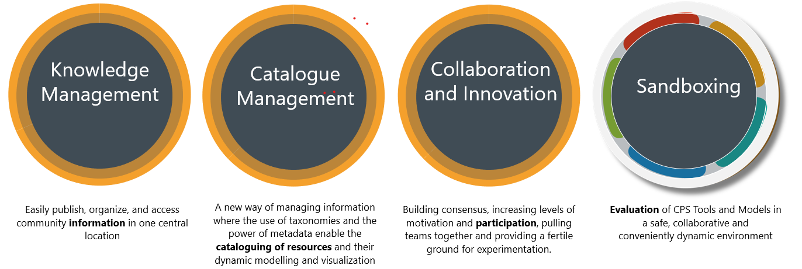
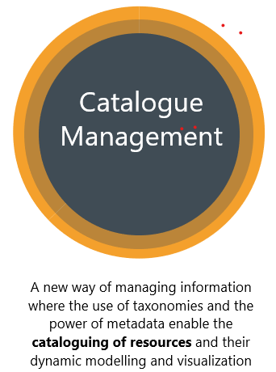
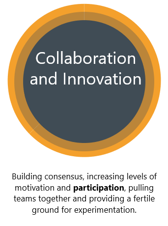
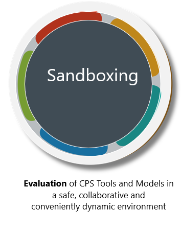

<div class="wrapper" (window:resize)="onResize()">
  <div class="u-center-text">
    <h1
      class="heading-primary heading-primary heading-primary--underlined heading-primary--underlined-blue"
    >
      Platform
    </h1>

    <p class="paragraph paragraph--big has-text-justified">
      The <span class="bold">HUBCAP</span> Platform is an open, cloud-based
      innovation portal that will enable businesses to contribute and access
      digital assets needed to undertake Model-Based Design (MBD) for building
      Cyber-Physical System (CPS) solutions on the scale required for SMEs.
      Assets include both models and services, and they will be made available
      to allow businesses to manage their investment in MBD technology and to
      promote experimentation.
    </p>
    <p class="paragraph paragraph--big has-text-justified">
      With the <span class="bold">HUBCAP</span> Platform we can Upgrade the
      capacity of SMEs to <span class="bold">leverage MBD technology</span> in
      CPS design Bringing together the innovation ecosystem for MBD of CPS
      within a space that will act as a
      <span class="bold">one-stop-shop</span> for accessing MBD competencies,
      technologies, best practices, methods, business and funding opportunities.
    </p>
    <p class="paragraph paragraph--big has-text-justified">
      The <span class="bold">HUBCAP</span> Platform is based on the
      <span class="bold">DIHIWARE</span> open source solution, developed by
      <a href="https://www.eng.it/en/" target="_blank">ENGINEERING</a> within
      the <a href="https://midih.eu/" target="_blank">MIDIH</a> H2020 EU project
      and currently in use in several communities in Europe.
    </p>
    <p class="paragraph paragraph--big has-text-justified">
      The <span class="bold">HUBCAP</span> Platform offers a complete
      collaboration environment, inspired by Enterprise Social Software
      principles. It supports both “Access to” and “Collaborate with” services,
      providing companies with access to the latest knowledge, expertise and
      technology during their
      <span class="bold">Digital Transformation</span>
      paths toward piloting, testing and experimenting with new digital
      technologies. To this end, the Platform facilitates the matching between
      challenges and solutions, to prioritize ideas and to offer a place for
      collaboration and co-creation.
    </p>
    <p class="paragraph paragraph--big has-text-justified">
      Knowledge-driven services next to a Catalogues Management System,
      harmonized with the collaborative and innovation side of the platform,
      create a virtual environment where providers and consumers of digital
      technologies are not just matching assets and needs, but they are
      collaborating to boost innovations.
    </p>
    <p class="paragraph paragraph--big has-text-justified">
      <span class="bold"
        >Lowering barriers for SMEs to realize the potential of growing autonomy
        in CPSs by allowing the access to advanced Model-Based Design (MBD)
        technology, training and guidance</span
      >
      is just part of the services offered by the
      <span class="bold">HUBCAP</span> Platform.
    </p>
    <p class="paragraph paragraph--big has-text-justified">
      The most innovative sub-system of the
      <span class="bold">HUBCAP</span> Platform is the
      <span class="bold">HUBCAP Sandboxing Middleware</span> that enables the
      evaluation of CPS Tools and Models in a collaborative and flexible dynamic
      environment. This middleware is designed to run each sandbox in an
      isolated and safe way, protecting the IPRs of the entities running in each
      sandbox.
    </p>
    <p class="paragraph paragraph--big has-text-justified">
      One of the main <span class="bold">HUBCAP</span> sandboxing capability is
      the provisioning of ready-to-use repositories for both MBD Tools and
      Models, easing the experimentation of CPS tools and models to the Platform
      users.
    </p>
    <p class="paragraph paragraph--big has-text-justified">
      All the functionalities of the <span class="bold">HUBCAP</span> Platform
      are accessed simply using a web browser, without installing any dedicated
      client and without affecting the end-user’s system.
    </p>
  </div>
  = 1000"
    alt=""
  />
  
  
  
  
</div>
